Penang CultureAlmanac 2026
The streets are the culture — but the festivals, museums and craft workshops give the layers names and dates. Read the year as a wall calendar: where to stand, what to pay, and the two festivals worth structuring a whole trip around.
Mid-Jan → mid-Mar stacks four festivals into six weeks
Thaipusam (Feb 2), the Hot-Air Balloon Fiesta (Feb 13–15), Chinese New Year (Feb 17–18) and Chap Goh Meh (Mar 3) land back-to-back. If your dates flex, this is the single richest cultural window of the year — book heritage hotels early.
A year in George Town
Each band is a month. Coral dots are the festivals that reshape a trip; the meter under each event reads offbeat ↔ touristy so you know what you're walking into.
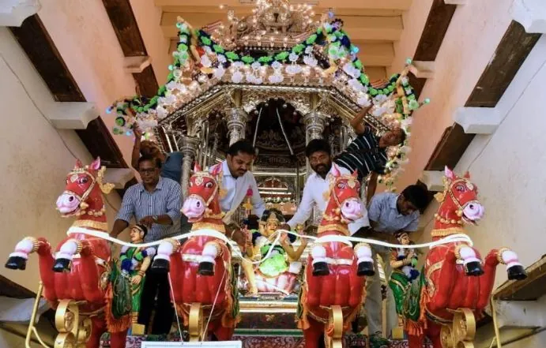
Thaipusam
Among the world's most intense. Devotees carry kavadi — some pierced with hooks — to the Waterfall Temple [8]. The centrepiece silver chariot, built in Karaikudi and shipped to Penang in 1894, marks its 132nd year — 23.9 m tall, five tonnes, and in 2026 carrying a live AI tracker so you can time your spot [9]. The Chettiar community holds Chetti Pusam a day earlier with ~90 peacock kavadi [10].
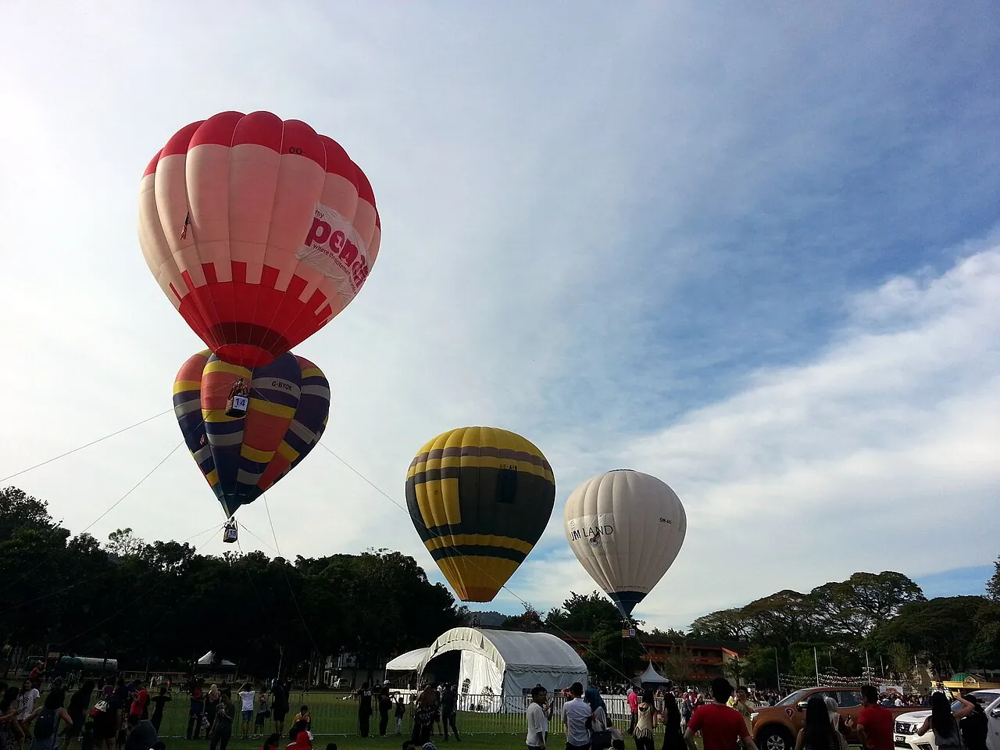
Chinese New Year
Lion dance and temple lighting; Kek Lok Si glows after dark.
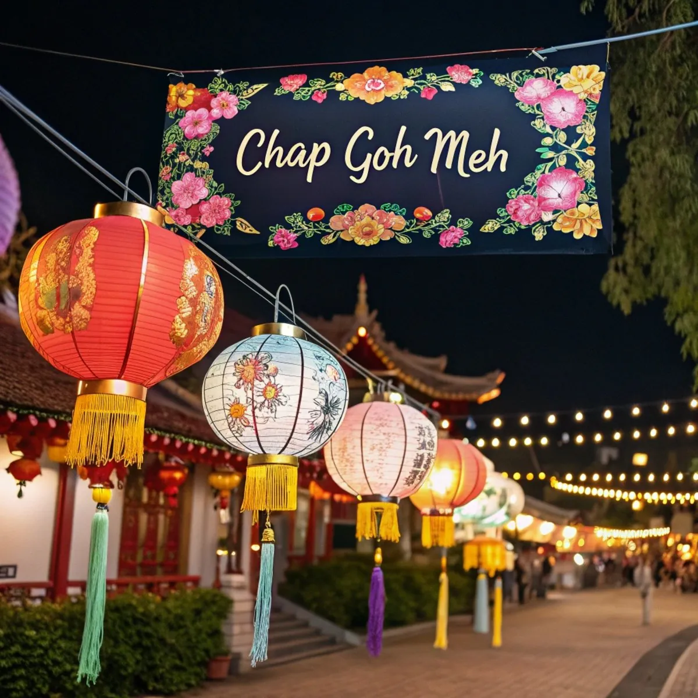
Chap Goh Meh
The 15th and final day of CNY — Penang's "Chinese Valentine's", with hopeful singles tossing oranges into the sea [3].
Hari Raya Aidilfitri
Open houses and feasting. ⚠ The one to plan around, not into — many businesses close. Islamic dates hinge on moon-sighting and can shift a day.
Wesak Day
An evening float procession winds along Burmah Road [13].
George Town World Heritage City Day
Free building tours and workshops mark the UNESCO inscription [13].
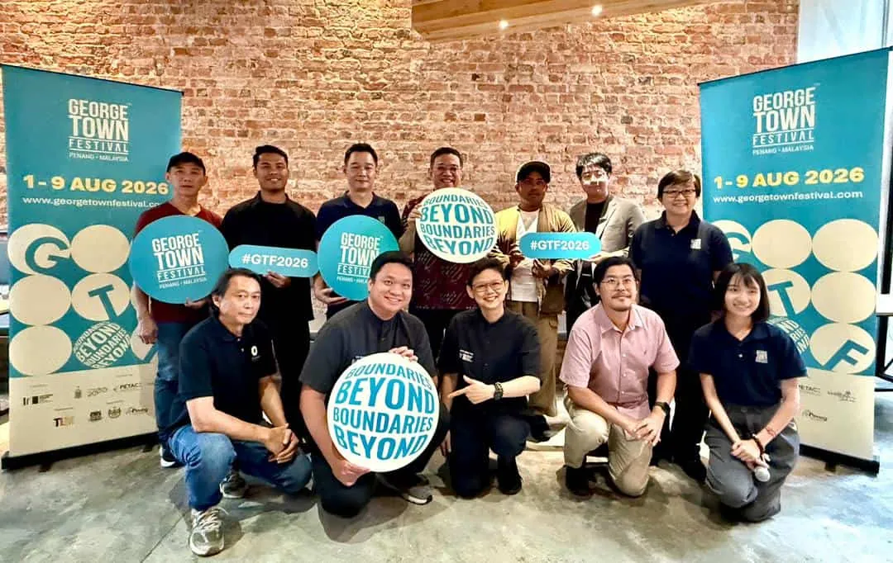
The arts peak. The 17th edition, themed Beyond Boundaries, runs 40+ events with seven ticketed shows; opening weekend takes over Padang Kota Lama with large-scale projection-mapping on the heritage architecture [4]. State-subsidised tickets went on sale June 10 — book the headline shows early via the official site [57].
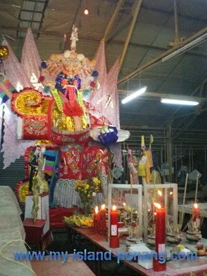
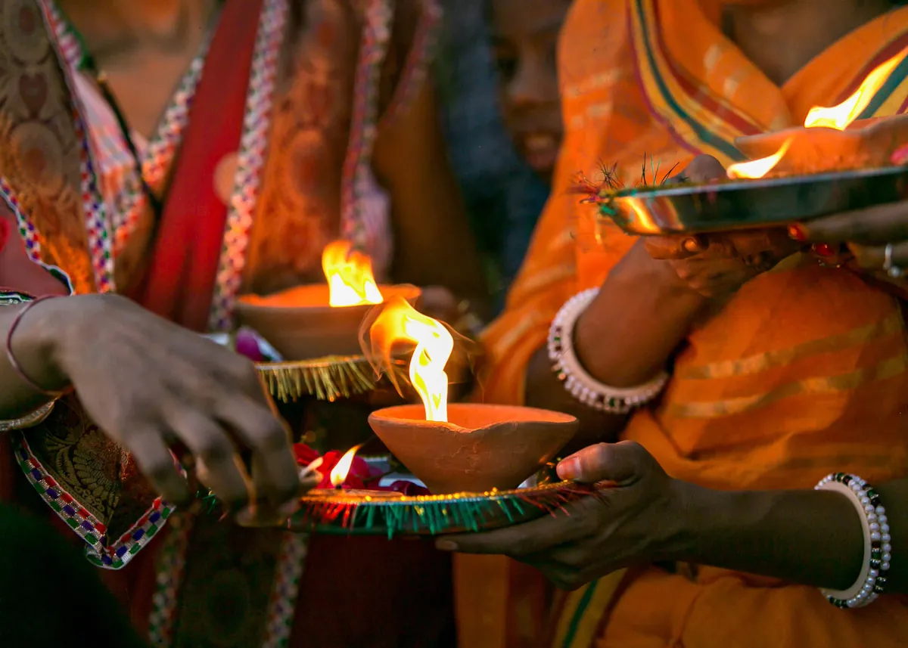
George Town Literary Festival
Malaysia's leading literary festival [23] — and the best window outside GTF for ticketed cultural events.
Museums worth the hours
Hours and fees change; figures are recent, in euros at ≈ RM5 = €1. Start with the Peranakan Mansion — it's where George Town's defining culture clicks into place.
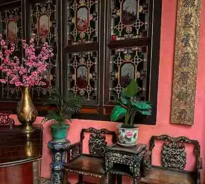
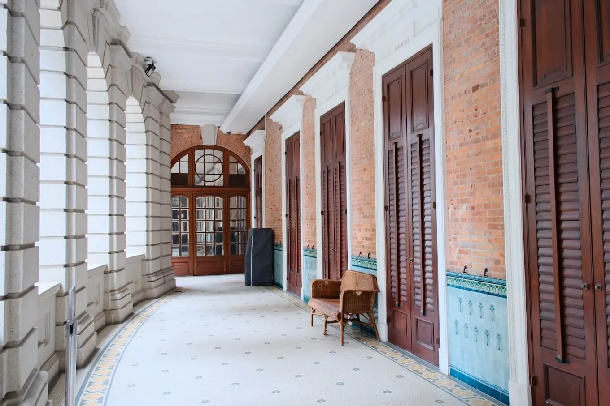
Sun Yat-Sen Museum
An 1880s shophouse where Dr Sun planned the 1911 Chinese revolution — courtyard, timber stair, free tea. Small, quiet, worth it [25].
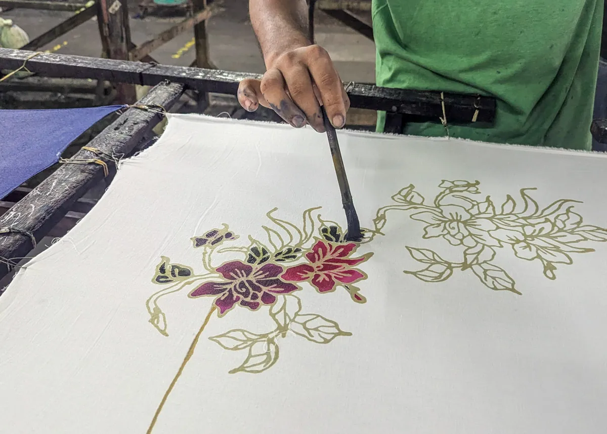
Batik Painting Museum
~70 batik paintings (a Malaysian fine-art form, distinct from fabric) from the 1950s on, including pioneer Chuah Thean Teng [29].
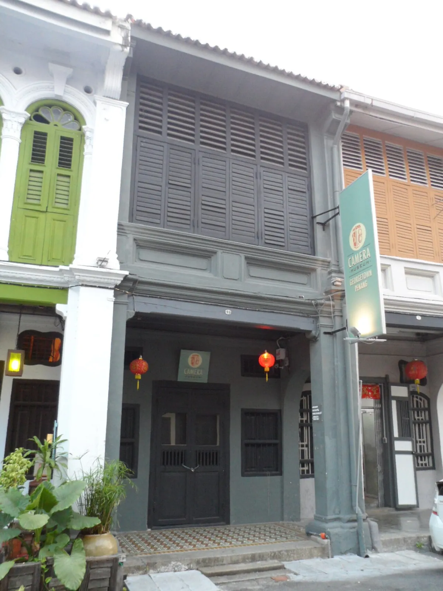
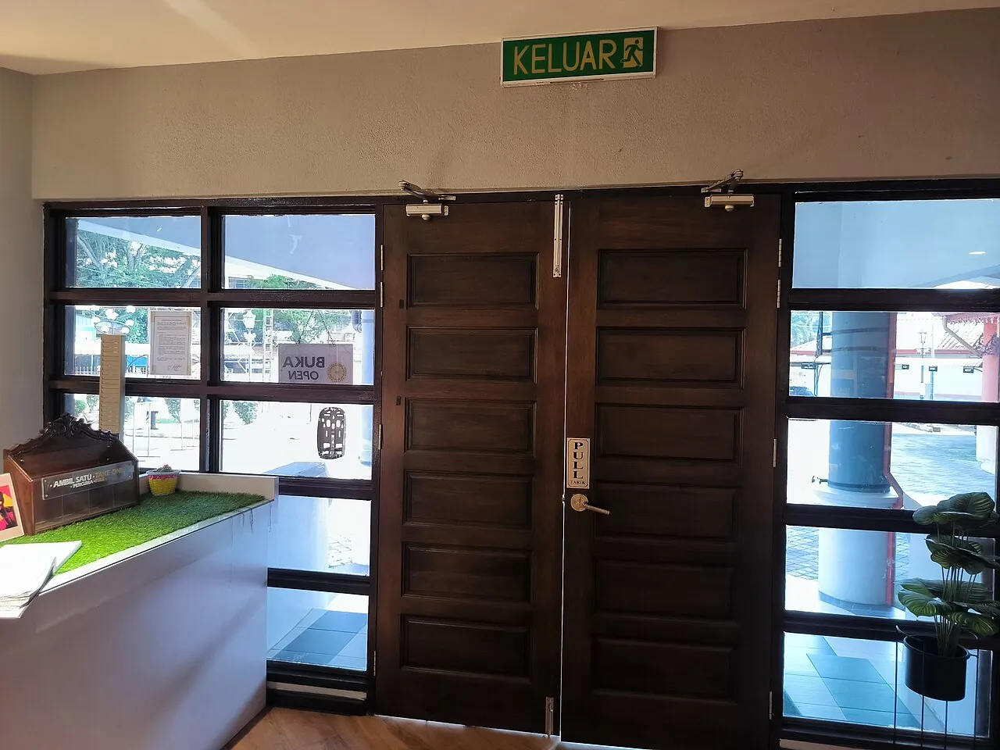
P. Ramlee Birth House
Free birthplace-museum of Malaysia's most beloved film and music icon — modest, but a genuine slice of Malay pop-culture heritage [35].
Interactive
Made in Penang Interactive
3D / trick-art and dioramas of Penang trades — fun for couples wanting photos and families, not a "real" history museum [33].
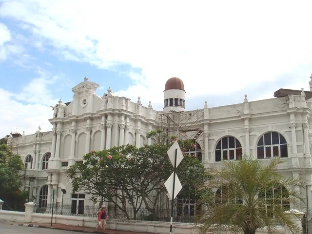
Penang State Museum
The official history museum is mid-RM20m restoration (slated to reopen end-2025). As of mid-2026, confirm before going; collections moved to a Macalister Rd branch [39].
The art space to time your Sunday around
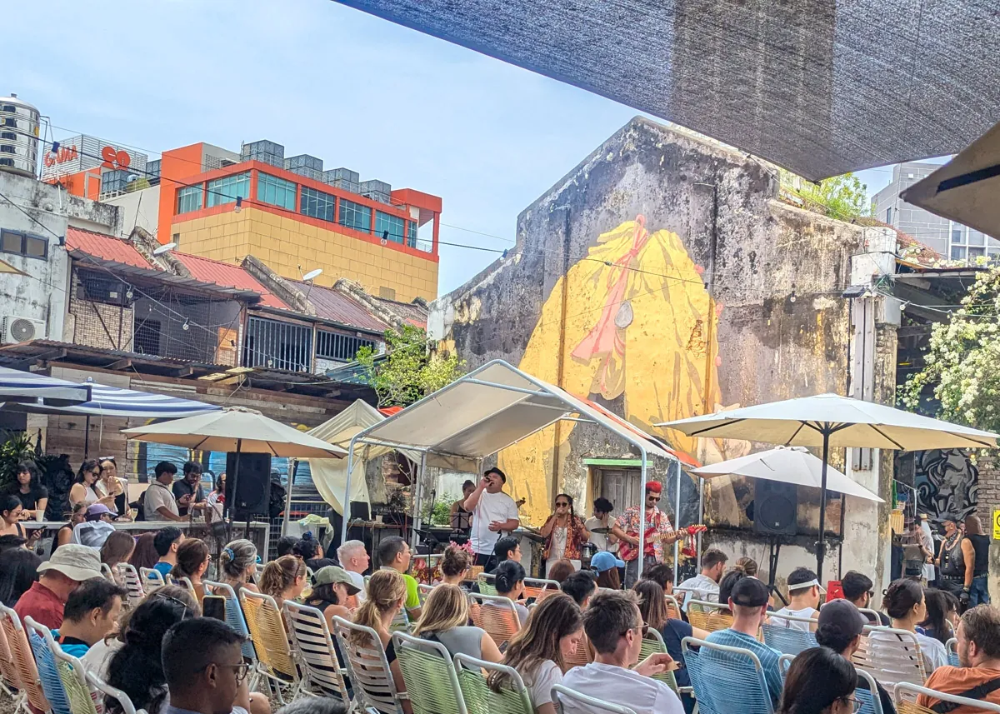
Hin Bus Depot
The heart of Penang's contemporary scene — a converted bus depot hosting free exhibitions, street art, gigs and talks [7]. Time your visit for the weekend market: Fri 12:00–19:00, Sat–Sun 10:00–17:00, with local makers, food and the popular Sunday "Hin Market" [40].
Outside festivals, this is where most live culture happens — check its calendar alongside the Lit Fest (Nov).
Crafts you can actually DO
This is where Penang beats other Malaysian cities — heritage trades you can watch, buy from, or try with your own hands.
Make your own batik
Roll a joss stick
Seek out the masters
Markets
Chowrasta Market
George Town's oldest wet market — produce and seafood downstairs; preserved nutmeg, belacan, dried goods, spices and second-hand books above [42][43].
Little India
Sarees, brassware, spices and a row of jasmine/garland florists on Pitt St — sensory peak in the two weeks before Deepavali (Nov 8) [21].
Hin Market
The creative/handmade market at Hin Bus Depot — local makers, food and art every weekend [40].
A culture-first skeleton
Half-day heritage core
Pinang Peranakan Mansion → Armenian St (Sun Yat-Sen, Batik Painting Museum, beaded-shoe + signboard artisans) → joss-stick workshop.
Evening
Little India for garlands and food — and, Oct–Nov, the Deepavali build-up.
If your dates flex
Anchor the whole trip to GTF (Aug 1–9) or Thaipusam (Feb 2) — both reshape everything else.
The rest of the Penang guide
Eat Penang
Hawker legends, Bib stalls, kopitiams and one-star Nyonya, by neighbourhood.
expeditionSleep — Penang
Restored shophouses, the Blue Mansion, the E&O and a hill retreat.
expeditionDo — Penang
Penang Hill, national-park treks, Balik Pulau cycling, kayaking, street art.
expeditionSee Penang
The UNESCO core, street art, clan houses, jetties, temples and the hill.
expeditionOffbeat Penang
Vipers, ghost tunnels, pig-blood noodles and a mosque on stilts.
surveyAround & Day-Trips
Getting in, out and about — hops, ferries and the day-trip orbit.